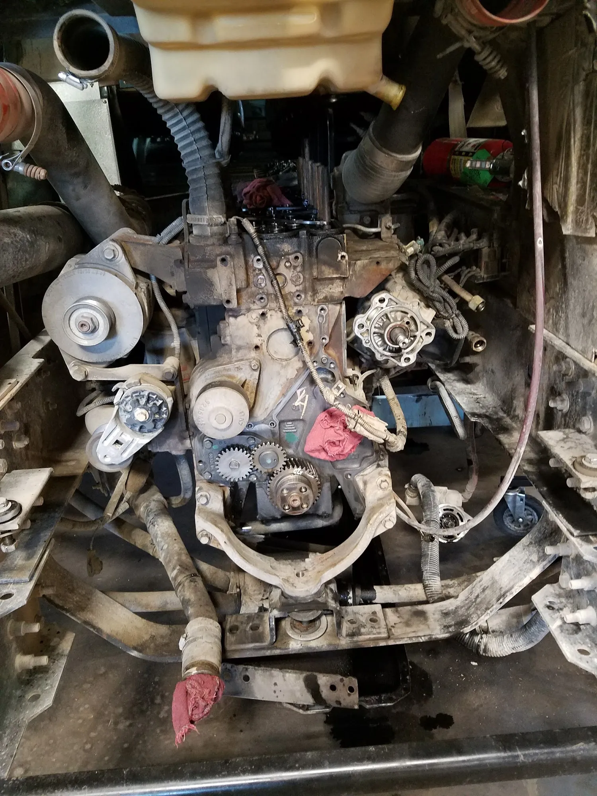

JOB 01Heavy trucks, work trucks and equipment
Diesel Truck Repair
Engine trouble, warning lights, a broken bracket: bring the truck in and the crew gets on it. Customers call Coleman’s “a great shop for all truck repairs,” and the yard tells the story, with semis, dump trucks, tankers, mixers and school buses all coming through.
- Diesel truck diagnosis and repair
- Trucks, buses and heavy equipment
- Repairs like a hood bracket replacement
“Coleman’s Diesel is a great shop for all truck repairs. Honest and priced right.”Doug, Google review